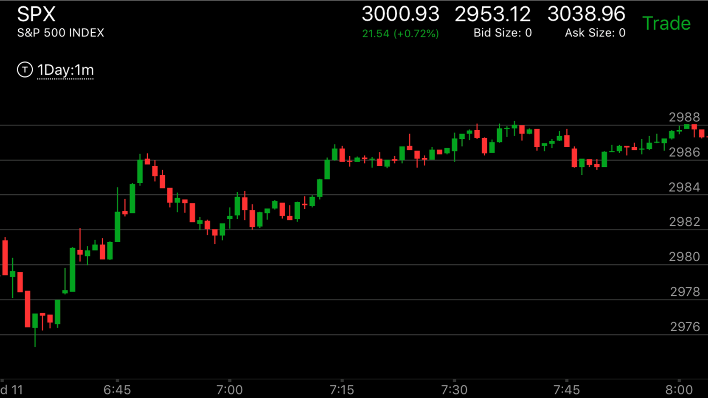
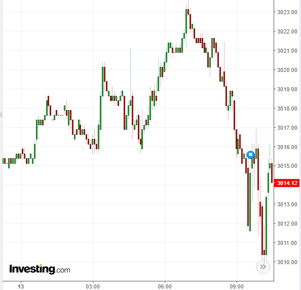

更大走势对顺势或者逆势的走势影响
- 由于盘前走势的影响，新高不一定是升势，新低不一定是跌势。
- 如果顺势，那么只有真实的两段走势，才能让大势反转。而如果逆势，那么只要出现新低/新高，就反转了。
具体的走势，应该有速度的要求。比如反转前，速度很快，或者连续运动后幅度超过前面。在逆势的时候，内部的走势，
就是两段走势的第一浪。突破新高/新低后，形成了第二浪。这样开始反转。
- 趋势有时是嵌套的，最大的趋势也许是升势，而比较小的趋势是跌势，具体到走势，就成了只有两段下跌才能反转
这个较小的跌势趋势。
- 趋势的变化，也是非常的快的，特别是对小的趋势。比如对于一个升势，如果它在内部出现了大幅拉回后，连续上涨，
出现新高后，会部分反转。这时它的本地趋势变成了跌势，虽然更大的走势仍然是升势。

图示：从盘前走势，以及21：47的缓慢下跌后，迅速反弹，可以认定大盘处于跌势。但是它需要填补
真空。22：10创新高，快速拉回后，22：12开始了第一浪，要注意，这个浪是在前面走势的内部的，因为它是逆势的。所以可以算
第一浪，
22：30开始第二浪。这个浪创新高。但是同时也是第二浪。这样就反转了。

图示：这个走势，大盘处于升势，6：40开始的第一浪其实不是第一浪，而是缓慢走出前面的
范围。6：45才算第一浪。但是这个走势本身看起来很像两段走势。
所以大势的判断非常重要。如果无法根据盘前走势判断大势，那么就耐心等待。


图示：盘前走势，出现了上涨，不断拉回。直到7：00它上涨后，不再拉回，而是继续上涨。这样
就成了反转走势。形成了跌势。但是它在下跌当中。有一定的加速动作。这样开盘后变得复杂。它处于跌势，但是需要填补真空。
开盘后，走低。然后冲高，冲高后，不断拉回。在6：50，它冲高后，不再拉回，这样反转了。反转后，它大跌。下跌当中，出现了两次
加速。再次反转。开始快速反弹。反弹到了前面的高点不到，开始走低。出现了两段下跌走势。然后缓慢的上涨，
一旦离开了前面高点的范围，创新高，就立刻反转了。因为是跌势。它只要创新高就反转。而不是两段走势才反转。
而在10：30它创新低，因为是跌势，它没有反转，而是拉回，震荡很久后，继续下跌。12：00它开始创新低。不会反转，走平反弹后，
12：15再次快速走低。幅度和速度都超过了前面。这样形成了两段走势而真正的反转了。


图示：盘前走势出现了强大的第一浪上涨。说明是升势。但是它在2：00的时候，走平下跌。
没有反转，3：00缓慢下跌，创新低。说明处于跌势。开盘后，它其实处于跌势。
先上涨，然后走低，6：40脱离上涨的范围后，它开始了第一浪
下跌，6:45走平后，再次下跌，速度虽然慢，但是幅度超过了第一浪，足以反转了。6：48开始反转，由于更大的走势是升势，
它在缓慢上涨后，飞快的突破了前面高点。